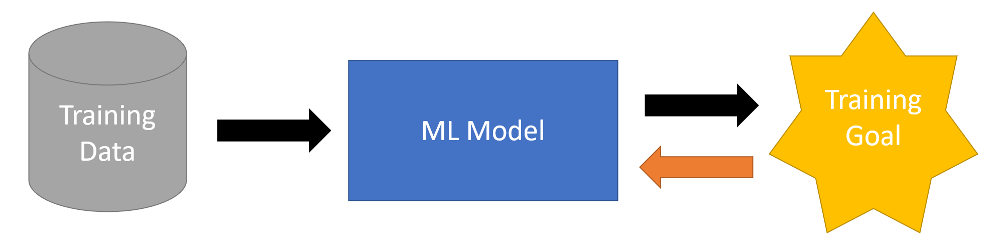

Motivation
We are all aware that every machine learning and data science model is just a part of a whole process, the price prediction model, which is later used to control the buying of raw materials, or the customer churn model, which leads to different actions towards customers. Our models are using prepared data and the predictions are consumed by following business processes or even other models, which can make the end-to-end process quite large and complex.
In general, we’re trying to reduce such complexity by focusing only on the model part. We will use prepared training data and optimize our model to fit an intermediate or approximate goal, e.g., forecast error or accuracy.
For model inference we usually integrate the trained model into a given process, receiving live data for the model and sending the model prediction further down the process.

Also, this approach simplifies the complexity of our data science projects and is often good enough to reach useful results, but it still has a few challenges we need to overcome:
What is the appropriate goal we should aim for? E.g., is model accuracy the best measure for the overall process outcome?
How to incorporate live feedback into the process and how to adjust the model based on live feedback?
In what way can we reuse learned models to optimize and control the input parameters of the process?
How to effectively monitor the model’s performance?
The challenges are mostly tackled by adding additional complexity to our process e.g., entirely separate components and code to handle feedback, etc.
A more straightforward approach is to enable a direct feedback mechanism into our forward process, that allows our models and components to get more information on how well their performance is down the line.

Such a mechanism allows us to be used in several settings and scenarios:
Train our model directly based on a goal down the process (e.g., differentiable programming Trebuchet example)
Collect live reward feedback from an environment to train an RL model (RL example)
Gather live human feedback to label uncertain data in an active learning approach (Music Generator example)
Optimize the input of our process using gradient-based optimization technics (control problems)
The swergio package helps us to implement and enable forward and backward communication between independent components.
To ensure the independence between the components and not require that all components are aware of each other, communication is implemented via Web Sockets and each component is only aware of certain communication rooms. The components can send and handle incoming messages.